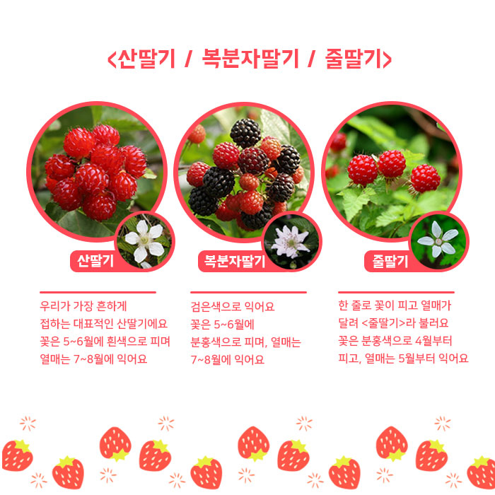
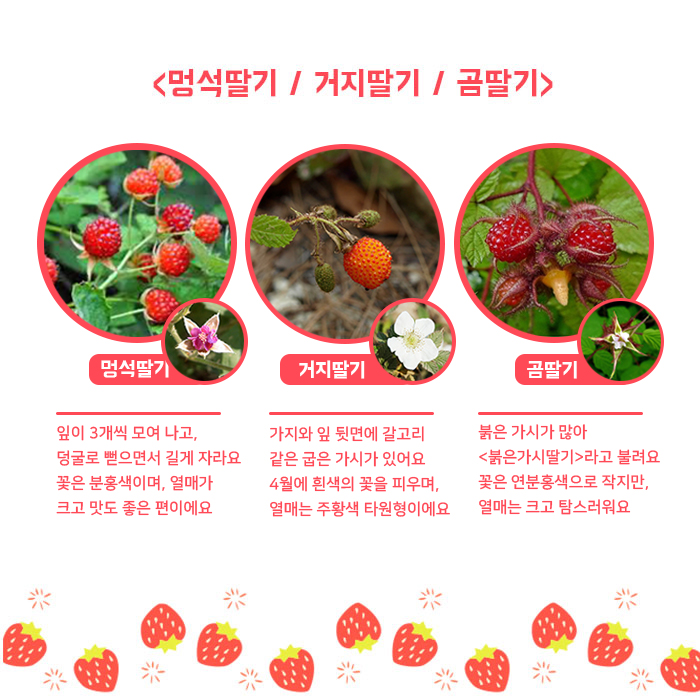
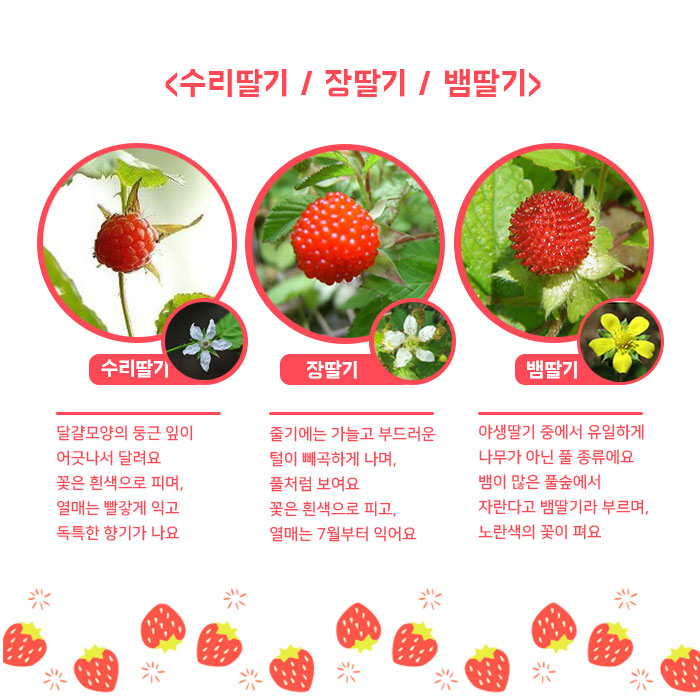
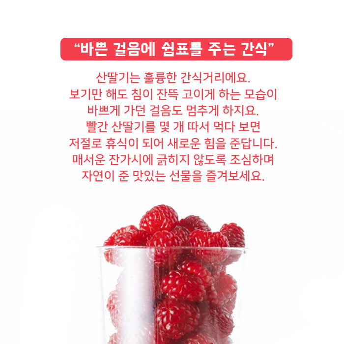
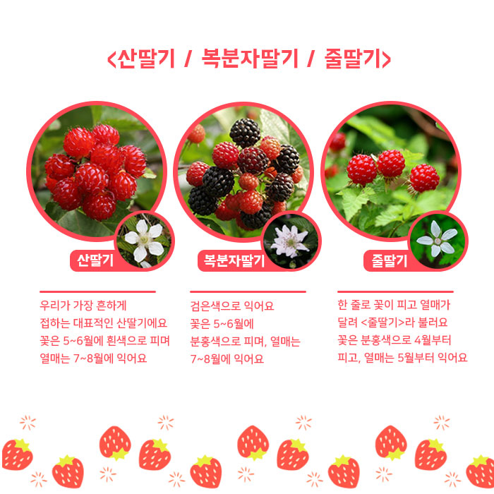
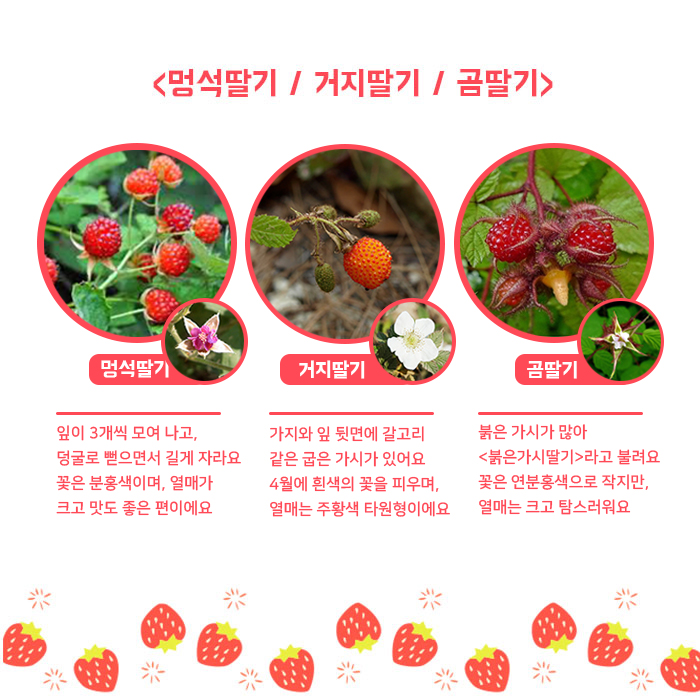
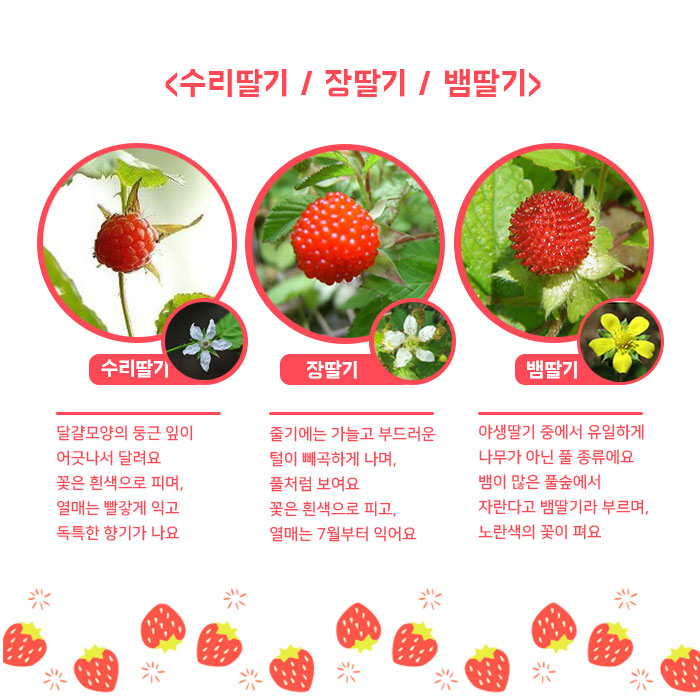
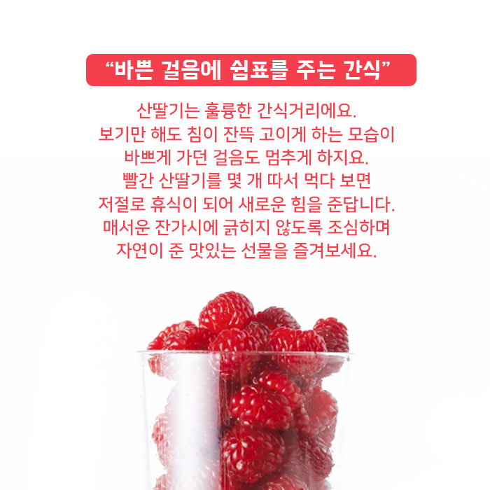

자연이 준 맛있는 간식 산딸기
장미과의 낙엽 작은키나무
새콤달콤 오독오독 정겨운 산딸기
뜨거운 햇볕 아래 빨갛게 익은 산딸기를 한 움큼 따서 한입에 털어 넣으면 탱글탱글하고 보드라운 열매가 알알이 터지며 새콤달콤하고 향긋한 맛이 입안에 퍼져요.
여름을 빛내는 야생 열매
산이나 들에서 야생으로 자라는 딸기들을 모두 산딸기라고 불러요. 우리나라에서 자라는 산딸기 종류는 스무 가지가 넘는다고 해요.
가시 돋친 빨간 열매
산딸기들은 모두 가시가 돋아 있어요. 맛있는 열매를 보호하기 위한 산딸기의 살아남는 방법이에요.
<산딸기 / 복분자딸기 / 줄딸기>
산딸기 - 우리가 가장 흔하게 접하는 대표적인 산딸기에요 꽃은 5~6월에 흰색으로 피며 열매는 7~8월에 익어요.
복분자딸기 - 검은색으로 익어요. 꽃은 5~6월에 분홍색으로 피며, 열매는 7~8월에 익어요.
줄딸기 - 한 줄로 꽃이 피고 열매가 달려 <줄딸기>라 불러요. 꽃은 분홍색으로 4월부터 피고, 열매는 5월부터 익어요
<멍석딸기 / 거지딸기 / 곰딸기>
멍석딸기 - 잎이 3개씩 모여 나고, 덩굴로 뻗으면서 길게 자라요. 꽃은 분홍색이며, 열매가 크고 맛도 좋은 편이에요
거지딸기 - 가지와 잎 뒷면에 갈고리 같은 굽은 가시가 있어요. 4월에 흰색의 꽃을 피우며, 열매는 주황색 타원형이에요
곰딸기 - 붉은 가시가 많아 <붉은가시딸기>라고 불려요. 꽃은 연분홍색으로 작지만, 열매는 크고 탐스러워요.
<수리딸기 / 장딸기 / 뱀딸기>
수리딸기 - 달걀모양의 둥근 잎이 어긋나서 달려요. 꽃은 흰색으로 피며, 열매는 빨갛게 익고 독특한 향기가 나요.
장딸기 - 줄기에는 가늘고 부드러운 털이 빼곡하게 나며, 풀처럼 보여요 꽃은 흰색으로 피고, 열매는 7월부터 익어요.
뱀딸기 - 야생딸기 중에서 유일하게 나무가 아닌 풀 종류에요. 뱀이 많은 풀숲에서 자란다고 뱀딸기라 부르며, 노란색의 꽃이 펴요.
“바쁜 걸음에 쉼표를 주는 간식”
산딸기는 훌륭한 간식거리에요. 보기만 해도 침이 잔뜩 고이게 하는 모습이 바쁘게 가던 걸음도 멈추게 하지요. 빨간 산딸기를 몇 개 따서 먹다 보면 저절로 휴식이 되어 새로운 힘을 준답니다. 매서운 잔가시에 긁히지 않도록 조심하며 자연이 준 맛있는 선물을 즐겨보세요.